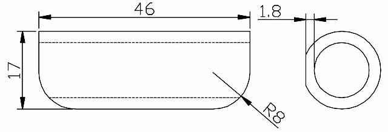

posted by aussieRS - Benelliforum - 2 Nov 07
I think I may just be starting to feel the slight shudder that occurs as a results of the engine headstock
stay coming loose, its very mild, like the brakes have a slight "pumping" feel, I doubt its the headstem
bearing as the bike has only 5000 kays on it and its never been wheelied ( yeah, I'm a woose), is it a
simple job to torque them back up and do I have to remove bits and pieces?
posted by colintornado - Benelliforum - 2 Nov 07
My RS front judder got bad, I found the front middle (see Engenia mod) loose. Then I found there are mounts
on the side of the cylinder head and my left one was also loose! You have to remove side fairing and the
duct to rad to access.
I am again getting a bit of judder ! but I cant work out if it is the discs distorted a bit by the judder
before ? I dont want to buy new discs then find out it still judders..I need to try a spare wheel/discs
to confirm where the fault now is !
Solution
The symptoms of this problem include brake shudder and knocking in the front end, when riding over bumps
As aussieRS has correctly diagnosed, it's due to the engine headstock bolt coming loose. It can work loose
because it can't be tightened firmly. There's too much spring in the headstock bracket.
The problem is solved by installing a brace inside the bracket
